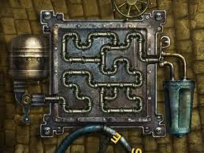

current notions of code size - the statement - its size - principle for counting larger bits of code - - thus size of a seq - then selection, and iteration at structured prgg level (calculate sizes without goto) - then introduce levels of abstraction and goto as an implementation layer for structured prgg - then address the "assumed size" problem as a factor of the level of abstraction - call the smallest indivisible operation at a level 1 turning, and show how to convert from one level to other by breaking down the smallest indivisible operation - then routine - examples - then tree of routines - then graph of routines - therefore functions - then procs - then apps - examples - concept of base - counting size of a multi-language app - example/comparison of some such apps
The common sense description of size is:
Size: How big something is. Length, area and volume are typical ways of quantifying how big something is. When applied to code, this essentially means how much code there is; specifically excluding ideas like how complex it is, how fit it is for its intended purpose and so forth.
Why do we need such a measure? The most common real-world use is estimation: when building new software or changing existing ones we like to estimate the effort involved. Is there a larger purpose, however - one that serves the practitioner and not just the manager? I posit that size is one of those basic properties of code that aids in understanding and knowing code as well. We talk routinely of small, well designed codebases that can be understood and used easily; and also of large, unwieldy codebases that are difficult to understand. Wouldn't it be nice to quantify those subjective statements? A case might therefore be made that size is one of the "thing"s that we should understand about code. Also, note that the "small" and "large" parts mentioned above point to the size of the code and the "easy" and "difficult" parts point to its complexity; and certainly the two are related. So quantifying size might lead to understanding other "thing"s about code.
Let's first look at how size is measured currently. In my cursory review of the current state of affairs, there are two broad approaches to measuring size:
The emperical measures have the advantages of being:
... but they also are:
Meanwhile, the descriptive measures have the advantages of being:
... but they also:
Obviously, neither approach seems comprehensive nor feels right. Wouldn't it be nice to have a measure of code size that:
That's what I'd call a natural measure of software size. The rest of this chapter is an attempt to build one.
Let's start with the simplest notion of code. All of programming has famously been depicted as being made of 3 basic operations:
IFLOOPWhat can we say about a program that has some collection of these 3 operations? Well, assuming we know the "size" of each such operation, the size of the program(s) that contain these operations can be computed as an accumulation of their individual sizes. Thus,
size(program) = sum(size(operation)) for all operations in the program --(1)Let's try this out on each of the 3 operations, starting with...
Formula (1) certainly seems appropriate for simple Sequential programs like "Print 5 superhero names", depicted here in pseudo-code:
// program 1
print "Superman"
print "Batman"
print "Green Lantern"
print "Green Arrow"
print "Aquaman"
stop
// SLOC: 6, Size: 6* unitsAssuming the size of the print and stop operations were 1 unit, and using (1):
size(program1) = sum(size(5 print operations & 1 stop operation))
= 1* + 1* + 1* + 1* + 1* + 1*
= 6* units
(the * is to remind us that sizes being 1 is an assumption)... is 6* units. This is sort of similar to counting lines of code and fits our common sense notion that the code is "6 units long" or "6 units tall".
Would that be long or tall? Here's where a little physical analogy might help.
We talk all the time about "building" software and code building has long been equated to piling Lego blocks on top of each other. And when heavy code breaks it crashes very similarly to how a heavy lego structure does. So let's equate size to height.
One break from the normal way of using Legos, though: code legos are indeed stacked one block at a time, but by sticking each block under the one that's already in place, not on top. That way, program 1 gets built in the order we read it, not from the last statement upwards.
But that was just a Sequence. Let's try adding in some ...
... by writing a simple program to check if 5 is odd or even. Again, in pseudo code:
// program 2
rem = 5 % 2
if rem == 1 then
print "5 is odd"
else
print "5 is even"
endif
stop
// SLOC: 7, Size: 5* sq unitsThis program is not just tall, it is wide too. Until the if is encountered, things are linear, but at that point we could go one of two ways. This can be visualized as as a "left+right" pair or a "down+side" pair, something like so:
// program 2A
+----------------+
|rem = 5 % 2 |
+----------------+-------------------+
|rem == 1 ? | |
| true | false |
+----------------+-------------------+
|print "5 is odd"| print "5 is even" |
+----------------+-------------------+
|stop |
+----------------+So, what then, is the size of an if? The size of the main branch contributes to the length of the program it's in, while the size of the alternate branch adds to the width of the program. It seems safe to say, therefore, that:
size(if) = size(condition check) + sum(size of individual branches)
= c + sum(b) --(2)
where
c = a non-zero size of the condition check
b = size(branch)
= 1 (width) x h (height of branch)Applying this to the if in program 2 and assuming the condition check is a size 1 (because there's only one comparison being done), we get:
size(program2's if) = size(condition check) + size(if branch) + size(else branch)
= 1* + 1 x 1* + 1 x 1*
= 3* sq unitsTo use this result in calculating Program 2's size, we've to represent all sizes as "areas" first. Assuming again that the print operation was 1 unit tall, we should add that it is 1 unit wide. Program 2's size(area) therefore becomes:
size(program 2) = sum(size(operations))
= size(assignment operation) + size(if) + size(stop)
- size(modulus op + assignment) + size(if) + size(stop)
Now assuming size(modulus op) = 1, we get
= 2* + 3* + 1* assuming the assignment operation is also of size 1.
= 6* sq units, compared to a SLOC of 7.For completeness, lets convert Program 1's size to "area" units as well:
size(program 1) = 6* sq unitsNote that program 2 has a SLOC of 7, but a size of 6* sq units. Smaller numerically, but larger by size and semantics.
Does our lego block analogy still hold up, though? The if requires data to be used, a decision to be made and one of (potentially) many alternate routes to be taken. This is probably best visualized as something "flowing" from one statement (ie block) to another, with control points to direct flow. Maybe pipes are a better analogy therefore?


Sorry I couldnt find better pictures, but hope these convey some part of the idea. Every time you see a T-junction or a Cross, think if operation; otherwise the flow of liquid represents the Sequence.
Unsatisfying as the pictures are, more so is the analogy. While data does flow from one operation to another, it doesnt flow like a liquid does. Data in a digital computer is discrete and better described as chunked than fluid. Is there a better physical analog? What we need is something that is built using standard parts (like legos) and allows things to flow through them (like pipes) but only allows solid things.
Without further ado, I present:


... the marble run! It does everything we would like our physical analog of code to do and then some. It has the standard blocks that link together obviously (which is a slight difference - that the connectors are fixed to the blocks); but it also has "source" and "sink" pieces, pieces that change direction (not all of which are logically important) and even pieces that have some built-in logic. If you look closely you'll find that one of the purple pieces is a simple flip-flop (aka IF)- it sends successive marbles down alternate paths.
So its seems that the marble run is indeed a good choice as our physical analog for code. We will use it only as a mental model in our theory forming activity, but there are real world marble runs that have been created to do actual computations; so its certainly an apt choice.
Ok, enough fun.Let's try the final operation ...
... by writing a simple loop to print 1 to 5. Again in pseudo code:
// program 3
loop i = 1 to 5
print i
end loop
stop
// SLOC : 4, Size: ?Written in this form, it seems like the for is a short cut to write out a long sequence of operations. Indeed, program 3 can be rewritten as:
// program 3A
print 1
print 2
print 3
print 4
print 5
stop
// SLOC : 6, Size: 6* sq unitsSuch "unfolding" of loops is not uncommon; and viewed this way we could conclude that a loop's primary size is its height, which is equal to the number of operations within the loop times the number of times those operations are looped around. Not all loops can be unfolded thus, however, as a simple example that uses a do-while loop or an infinite loop will attest. However, there's an alternate way to express a loop, presented below. This will work for any kind of loop including ones whose number of iterations cannot be determined up-front.
// program 3B
i=1
top: if not(i <= 5) // line 1
goto end
else
print i
i = i + 1
goto top // line 2
end if
end: stop
// SLOC : 9, Size : 7* sq unitsNow the true nature of Iteration becomes obvious: Iteration = if + goto. The if sets up the conditions for iteration and the goto executes it. The goto is therefore the key ingredient in getting iteration to work, so let's try to understanding it a little better.
A goto is a route from one "block" to another, a connector. Program 3B has 2 obvious kinds of gotos and one that's not that obvious:
The Unconditional goto alters the flow of execution and skips ahead to another location, adding the "width" (or more generally, another dimension) to the program. If the destination of the goto is not local to the point of branch off, the impact on size is somewhat difficult to determine.
Conditional gotos remove some of that uncertainty by checking a condition before branching. Adding the check reduces the chance of an invalid target or that of "spaghetti code" - an unholy tangle of wild gotos that only makes sense when you write it.
However, conditional gotos only reduce the chance of indeterminate size, they do not eliminate it. For eg, the goto end line in program 3B could lead to some location that is far away from the rest of the code. So the deciding factor for size of a goto is whether or not its destination is known. Let's call the ones with known, defined destinations like 'top of the loop' as _Bound Goto_s and the ones that are not such as _Unbound Goto_s. Their sizes, therefore, are:
size(bound goto) = 1* width x N height already counted elsewhere
= 1* width x 1* height
= 1* sq units --(3)That is, the height of a bound goto exists, but it has typically been already considered as part a "larger structure", so only the contribution of the single goto "block" need be considered.
size(unbound goto) = G --(4)
where G = 1 unit height x G1 width or
= 1 unit width x G2 heightThat is, while we could measure one or more "dimensions" of the unconditional goto, there will always be one dimension that we cannot quantify and therefore its overall size remains an unknown quantity.
Finally, Implicit gotos: On the "main line" of code, implicit gotos guide the execution of code by stringing successive operations together. In fact the machine executing these programs (or any general computer, for that matter) can be thought of executing this meta-program:
// meta program 1
1: read a specific location for the address of the next instruction to execute
2: execute it
3: if step 2 didnt set the next instruction to execute, autoincrement to next address in the same location
4: goto 1So the gotos exist, even if we do not depict them in code at the level of normal discourse. The difference between these gotos and the others is that they connect one operation to another "by default" i.e, in the most obvious way that they are supposed to be connected. As such, its safe to posit that they do not contribute to the size. That is,
size(implicit goto) = 0 --(5)In program 3B, both the gotos are well-behaved. They dont fly off to kingdoms unknown: they go to the top of the loop or exit it - two very well known spots. So they are clearly bound gotos. So the size of program 3B would be:
size(program 3B) = sum(size(operations))
= size(assignment) + size(if) + size(stop)
= 1* + size(condition) + size(branches) + 1*
= 1* + 1* + (1 x 1* + 3 x 1*) + 1*
= 2* + 4* + 1*
= 7* sq unitsMore generallly, the loop in program 3B could be written in template form as:
// program 3B-templatized
<<.. steps before loop..>>
<<initialize loop>>
top: if not <<loop condition>>
then
goto end
else
<<loop body>>
<<increment loop>>
goto top
end if
end: <<.. steps after loop..>>Thus, size(program 3b loop) = size(init loop) + size(if) Now, let size(init loop) = i, some nonzero size depending on the type and number of operations
size(if) = size(condition) + size(if branch) + size(else branch)
= size(condition) + size(goto end) + [size(loop body) + size(increment loop) + size(goto top)]
= c + 1* + [ b + p + 1* ]
where c = a nonzero size for the condition check
b = a variable loop body size
p is some variable nonzero size for the increment step
= c + b + p + 2*
= c + b + p + 2*
Thus,
size(loop) = i + c + b + p + 2* --(6)... which still comes out to a clean enough "sum of parts" type of equation.
Back to program 3, however; for we were trying to determine the size of that loop. Here's its template form:
// program 3-templatized
loop <<loop init>> to <<loop condition>> <<implicit loop increment>>
<<loop body>>
end loopAt this level of abstraction, all the other elements of the loop are present, but there are no gotos. The gotos are somehow "subsumed" in the mechanism of the loop such that the user of the loop doesnt have to know about it. So at this level, the size of a loop would be:
size(program 3 loop) = i + c + b + p --(7)What about the other forms of loops that we alluded to earlier? Here's the template form of the other typical versions of the loop: the while and the do-while:
// while-template // do-while-template
<<loop init>> <<loop init>>
while <<loop condition>> do
<<loop body>> <<loop body>>
<<loop increment>> <<loop increment>>
end while while <<loop condition>>All are functionally equivalent and from inspection its obvious that they have the same size (even if count the c piece earlier or later). They are structurally different, but that's not germane to their size.
So to summarize the discourse on loops:
size(loops with goto) = i + c + b + p + 2*
size(for loop) = i + c + b + p
size(while loop) = i + c + b + p
size(do while loop) = i + c + b + p --(8)Or more generally,
size(loop) = i + c + b + p + o
where o = overhead at level of abstraction
= 0 at SSI level
= 2* if gotos are explicitly used --(9)To answer the specific question of Program 3's size, however, we'll have to apply (9) and make some assumptions on the sizes again. Since both the initialization and increment steps in this case are single operations, we'll assume they're also of size 1 sq unit. The loop body consisting of the single print operation has long been deemed of size 1 sq unit; and the condition is simple enough so we'll take that tooas a 1; so applying these values we get:
size(program 3) = size(loop) + size(stop)
= i + c + b + p + o + 1*
= 1* + 1* + 1* + 1* + 0 + 1*
= 5* sq units vs SLOC: 3Let's review: we started off by using the simple SSI model because it was high level and could easily be related to the general nature of code. We focused on sizing programs, wrote 3 programs in pseudo-code and came up with formulas for the 3 operations in the model using a (yet unnamed) new measure of size for them. Here're the sizes that we arrived at using the new formulas and measure:
size(program 1) = 6* sq units vs SLOC of 6
size(program 2) = 6* sq units vs SLOC of 7
size(program 3) = 5* sq units vs SLOC of 3Admittedly, there's a lot of hand-waving going on here; but the contrast with SLOC is interesting. The 2D-ness of our size unit seems to hint at the structure that goes into loops and conditionals better than the "flat" count of lines. Program 2's size is smaller compared to its SLOC because the textual "overhead" of denoting loop structure is removed from the equation, while Program 3's textual brevity in having all structural elements of the loop contained in the same line is called out, increasing its size when compared to its SLOC.
SSI essentially talks about programs as being combinations of sequence, selection and iteration; while we've been doing all our analysis in isolation. Let's fix that. Our formulas for sizes of these individual operations are:
size(sequence) = sum(size(operation)) for all operations in sequence --(1') program replaced with sequence
size(if) = c + sum(b) --(2)
size(loop) = i + c + b + p + o --(9)Since all these formulas are additions, we could treat the ifs and loops as "compound" operations that contribute a known size to a larger sequence that is the program; and at this larger level, there is only the sequence. This means that (1') above can be restored back to its original form:
size(program) = sum(size(operation)) for all operations in program --(1)
= sum(size(ifs)) + sum(size(loops)) + sum(size(other operations)) --(10)This result is interesting. As long as all we're doing is measuing size, the order of operations dont seem to matter - only that they are counted. To use the marble run analogy, the size or color of the blocks dont matter - only their number. Obviously, this will not apply for other measures of code such as complexity: we build code in a particular order explicity so as to effect certain results; but for size this is a Good Thing(TM).
The discussion above kept moving between alternate ways of representing things: Program 2 was represented as programs 2A and Program 3 as 3B to depict the same program with different constructs. These 2 ways can be thought of - especially within the Structured Programming context - as two different languages: the former being a pure structured program with no gotos and the latter as a "lower level", unstructured language that DOES have gotos. This hints at two things that we'll explore soon:
The SSI model has been a good starting point, but it glosses over quite a few things that we take for granted while writing code:
if and the loop are the only concepts required to express general computing, so "what each step in a sequence does" is glossed over. To size an actual codebase, however, we do need to consider each such operation and size them. Up until now we've been making assumptions on their size using those pesky asterisks, but they do need to go at some point.ifs and loops is something that the SSI model glosses over. However, they do sound like they would have a considerable impact on size and other properties of code that we'd be interested in.main(). Obviously, the SSI level of abstraction eschews it, but we will have to embace it to make sense of real-world code.Let's address each of these issues next. Along the way we'll also try to shore up the ideas that have been described somewhat informally above and hopefully arrive at more elegant ways of measuing size.
Anyway, time to tackle all those operations that the SSI model is silent about.
So what are these operations that fall so ignomiously into the "Other" category? Off the top of my head I can think of a few types:
Obviously, the list cannot be exhaustive and that's the reason for its abstraction into a catch-all name that I've been calling Operation. Let's look at some examples in a few real-world languages and see if we can map this concept to something concrete:
Note: I've taken care to write the smallest independent bit of code that a compiler/interpreter of the language would accept as valid.
| Operation | Java | C/C++ | Ruby | Python | Haskell | Lisp | Prolog | Comments |
|---|---|---|---|---|---|---|---|---|
| Input | char c = System.in.read() | char s = gets(s); or chars; cin << s; |
gets | input() or sys.stdin.readline() | getLine or IO.readLn | (read) or (read-line) | get() or read_string() | ... |
| Output | System.out.println() | puts(s) or cout >> s | puts | print() | putStrLn | (print) | put() | ... |
| Assignment | System.in.read() | gets(s) or cin << s | gets | input() or sys.stdin.readline() | getLine or IO.readLn | (read) or (read-line) | get() or read_string() | ... |
| Function or Subroutine call | System.in.read() | gets(s) or cin << s | gets | input() or sys.stdin.readline() | getLine or IO.readLn | (read) or (read-line) | get() or read_string() | ... |
| Declaration | System.in.read() | gets(s) or cin << s | gets | input() or sys.stdin.readline() | getLine or IO.readLn | (read) or (read-line) | get() or read_string() | ... |
| Unique to language | System.in.read() | gets(s) or cin << s | gets | input() or sys.stdin.readline() | getLine or IO.readLn | (read) or (read-line) | get() or read_string() | ... |
conceptual operations to compound statements to derivation of atomic statement
size(program with subroutines) = sum(size(subroutine)) for all subroutines in program
size(app with multiple programs) = sum(size(program)) for all programs in app... Or more generally
size(code in container) = sum(size(contents)) for all contents in the container
where
container = routine | class | package | module | program | app | ...
routine = function | procedure | method
contents = statement | containerTwo points to note:
| app | ... in container's definition seems to imply that these "formulas" should hold for things larger than a single program and that is certainly something to aspire for; but for now we will restrict ourselves to the level of a single program so that we can concentrate on defining size in a single language. Thus:
Axiom 1: The smallest unit of independent code execution in a language is called a Statement; and it is the basis of size measurement because of its atomicity.
Of course, the disadvantage in making a concrete choice of structure-driven unit of size is that it is language dependent: a Java Statement will (with intuitive obviousness) not be the same as an Assembly Statement; but neither will it be the same as a Ruby Statement, or even a C# one (even though the 2 languages are closest to each other in this list). Already, it is thus "inferior" to some existing ways of measurement, eg, SLOC. However, it is appealing aesthetically: as programmers we think in chunks of logic, not lines of text; so to measure what we build in those terms seems more appropriate.
Note that I've explicitly used the term "structure of the language" and not the much more obvious term "syntax of the language". The reason is that I intend the statement (and other higher structures in code) to be as logically agnostic as possible while retaining the specific qualities of the language that it is written in. For now we can imagine size being measured from the AST of a parsed program instead of the source itself. All ASTs of statements have the command + arguments structure but the specifics are dependent on the language itself.
Of course, all of this presupposes the existence of a language, so let's formalize that notion:
Axiom 0: All code is written in languages. A language has a finite set of statements that can be used to write code in it with.
But what, actually, IS a Statement? The SSI classification of computational operations doesnt say what the operation actually is; it merely identifies two specific ones as being primoridial - the IF and the LOOP; and leaves out the actual definition of what each step (other than these) actually is or does. So not much help there.
Let's see if an example helps. For specificity, I'll use Java, but it is used as an example of programming languages in general, not as THE defining language for this theory. Here's the standard Hello World in Java:
// program 1
public class HelloWorld{
public static void main(String[] args){
System.out.println("Hello World"); //line 1
}
}
// SLOC: 5, Size: ?Note that I've also included the source lines of code count for reference.
Ok, if you're not a Java person, you're going to complain that I chose a bad language to build an example on; and I'd almost agree. There's only one actual line of code in there - the one that prints the message; everything else is ceremony. However, it does help expose the fact that code written in any language eventually has some superstructure; and in that sense Java's requirement to expose the structure is much more useful for our size-measuring purposes than other languages that might "hide" such structure "under the carpet".
So, warts notwithstanding, let's see if we can use this example to examine the idea of a Statement. From line 1 alone, quite a few questions arise:
println() is its not an actual language feature; its a method in a library. Should we actually count its call as a statement?If we factor in the rest of the program, more questions arise:
main()'s definition?Let's try to answer each question and form some opinions along the way.
Let's contrast Program 1 with some similar code that might flesh Qn #1 out better: Here's one contrasting program:
// program 2
import java.io.PrintStream;
public class HelloWorld{
public static void main(String[] args){
PrintStream outPS = System.out; // line 1.1
outPS.println("Hello World"); // line 1.2
}
}
// SLOC: 7, Size > Size(Program 1)?Aside: Note that Program 2's SLOC went up because
PrintStreamhad to be imported in, while Program 1 doesnt need that line because of "platform" affordances. More on such platform implications later.
Now, program 2 is admittedly contrived, but it's reflective of similar contrasts in real code where the latter representation would be useful [1]. It splits out the original line 1 into two, separating the individual steps involved and it does increase the size of the program even if with an "unnecessary" addition of a local variable; but it highlights the fact that System.out.println(...) is something more than atomic - its a Compound Statement, if you will.
In fact, we could take it a step further and do this:
// snippet 2.1
PrintStream outPS; // line 1.1.1
outPS = System.out; // line 1.1.2
outPS.println("Hello World"); // line 1.2
// SLOC : 3, Size : ?Now it cannot be broken down anymore and therefore matches our definition of a Statement from above. So if we took the definition to heart and broke line 1 down this way, 3 "smallest possible" Java statements are required to make it. For a small program like the one above, this is fine, but for any non-trivial codebase we cannot expect to get a true count of atomic statements without some medium-to-high complexity parsing of the source - something that might not be acceptable in all cases. If we instead took the shortcut of just considering line 1 a single statement, its size is 1. So: we can take one of two stances to answer Question #1:
The Simple way is good in that it is easily applicable - both manually and with tools; and bad in that expressive languages can "pack a lot of wallop" into a single complicated statement (I'm looking at you, APL) which will not be represented truthfully in the size of the program. But it can be considered the next incremental step to counting SLOC - with the statement separator replacing the newlines.
The Exact way is good in that it tends towards purity in measurement - code can be sized in terms of the atomic operations supported by the language itself and/or its runtime. It does, however, require non-trivial understanding/parsing of the source by human/tool to arrive at the exact size of code.
Should we pick one method over the other? The scientific mind suggests discarding the Simple for the Exact. The Simple approach, however, might be useful for "rough estimates". It could also be that the difference between sizes arrived at by the two methods are statistically close enough for a sufficiently large body of code that we might not want to go through the pain of calculating size exactly.
So let's keep both for now.
Ok, so we've decided that there are atomic and compound Statements and have defined the former as statements that cannot be reduced further within a language's grammer. What about the size of each such atomic Statement, though?
Good question. Very good question, in fact. Its so good a question that we'll have to keep it to the end of this discussion, I'm afraid. For now let's just assume that the sizes of all kinds of the atomic statements are known somehow and move on to the other questions. I promise we'll return to this one.
Are we done with Qn #1? Not quite; here's another version of the same program:
// program 3
public class HelloWorld{
public static void main(String[] args){
System.out.print("Hello ");
System.out.println("World");
}
}
// SLOC: 6, Size = Size(Program 2)?This Program splits the final function call itself into two while still achieving the same end result. Clearly a statement can not only be broken into smaller bits, but what it does can also be broken into smaller bits. This hints at a couple of things:
Onto Questions #2.
While a library function is not a language feature, the ability to make a function call certainly is. A function call is essentially a shortcut to invoke a bunch of statements defined elsewhere; and supporting such a feature does require some effort on the language runtime's part. So Statement it is.
The definition of the function does have a size, but it would be different from that of a call to the function, surely. A call to a function should have a non-zero size, but it shouldnt be the same as that of the function itself.
Onto Question #4.
At first sight, this question seems trivially answerable: line 1 in Program 1 is the only "working" statement, so the others shouldnt have much importance. However, it becomes interesting when contrasted with other languages that do not necessarily need containers such as classes nor a predetermined function like main. The same hello world in ruby (or Python), for example, would be:
# program 4
print "Hello World", "\n" #SLOC:1, Size: ?Note: Yes, I know that this is possible because of "Platform affordances" and that behind the scenes are some intelligent defaults. I also realize that this is not the same as Java's
System.out. We'll deal with this "tip of the iceberg"-ness later.
Now it seems intuitive that the first program is "larger" than the second one, doesnt it? Or, to contrast in the other direction, what if we wrote our HelloWorld.java like so?
// program 5
public class HelloWorld{
public static void main(String[] args){
greet(); //line 1
}
public static void greet(){
System.out.println("Hello World"); //line 2
}
}
// SLOC: 8, Size: ?This (contrived) version of the code is obviously bigger than the previous - while doing the same thing as before.
So Q#4 really is: Does a language's container structures contribute to its size? Going by the examples above where they "add to the structure", I would argue that they do; and thefore should be considered "compound" Statement s with some non-zero size of their own. This answer also answers the question about main()' - and by extension - all functions: functions are containers and therefore have a non-zero size of their own in addition to contributing whatever size their contents have to the total size.
Let's update our formulas from above, therefore:
size(code in container) = size(container) + sum(size(contents)) for all contents in the container
where
container = routine | program | app | ...
contents = statements | containersLooking at the equation above, however, how different is a container from another atomic statement in terms of contribution to size? Its presence adds to the total size just as another atomic statement and the formula above ensures that its contents' size is accounted for. As long as we retain the + sum(size(contents)) part, we could treat containers as some more atomic statements during analysis.
To summarize so far:
Onto Question #5.
So how do we put some numbers against these ideas? We're essentially at an impasse: We dont yet know how to size the atomic statements, nor do we know the size of the the containers themselves. All we have determined so far is: If we know the sizes of the statements and their containers, the overall size is an accumulation of individual sizes.
Earlier, I stopped short of delving deeper into sizing atomic statements because that meant going down from the level of the language in consideration. How then are we to break this impasse?
Well, maybe we dont have to. Instead of actually analyzing atomic statements, we could always fake it, err, make some educated guesstimations :)
For instance, what if we took the size of the atomic statements and all containers to be 1? What this means in principle is that we dont care what the actual sizes of atomic statements are since we're not bothered about what happens below the level of the language under consideration. As far as we know, things below that level "just are there" and therefore we will treat all atomic statements as "blocks of the same size". Similarly, we will treat all containers as being equivalent to single blocks.
Yes, this does mean that we're comparing apples to oranges; but let's see how far it takes us.
So, applying the formula
size(code in container) = size(container) + sum(size(contents)) for all contents in the container...to program 1, we get:
size(program1) = size(program) + size(main)
= 1 + size(main)
Now,
size(main) = 1 + size(statements)
size(stmts) = 1 if using simple approach
= 3 if using exact approach
Thus,
size(program1) = 1 + 1 + 1 = 3 (simple)
= 1 + 1 + 3 = 5 (exact)Doing the same exercise for all the programs we've written so far gives us:
Table 1
| Program | SLOC | Size(Simple) | Size(Exact) | Comments |
|---|---|---|---|---|
| Program 1: HelloWorld.java | 5 | 3 | 5 | |
| Program 2: HW.java with SOP split | 7 | 5 | 6 |
size(import) = 1. Exact size(line 1.1) = 2 because it's eventually equivalent to the first 2 lines in snippet 2.1 |
| Program 3: HW.java with 2 SOP calls | 6 | 4 | 8 or 6 ? Ans: 8 |
Should the two System.outs be expanded with duplication or not? If yes, each line has size 3; if duplicates are removed, the two lines have a combined size of 4 Ans: Yes, line has size 3. See below for discussion. |
| Program 4: Hello World in Ruby | 1 | 1 | 1 | Is a Ruby/Python size 1 the same as a Java size 1? |
| Program 5: HW.java with greet() | 8 | 5 | 7 |
size(greet)=1. size(SOP)=1 in simple and 3 in exact as before |
A few points that become apparent with this comparison:
System.out.println() calls which should be reduced to the 3 lines from snippet 2.1. But since they both do the same thing, we could just reuse lines 1.1.1 and 1.1.2 when reducing the call to print(). This would bring down the effective statement count by 2, resulting in a total of 6 instead of 8. However, should such an optimization be done? We are using the mechanism of breaking down to smallest statements to arrive at the size of a compound statemnt, but what we're actually measuring is that line1 hs a package access,an object access and a function call. In that sense we should size it at 3. Also, this happens to be a small program where two statements that use the same objects are right next to each other. By allowing such optimizations we make the counting of size non-local and therefore more difficult to understand and apply.Ok, that was for the smallest possible programs. What if we did the same exercise for slightly larger programs?
TODO: COMPARE SIZES OF 2 PROBLEMS IN THE SAME LANGUAGE TODO: COMPARE SIZES OF SAME PROBLEM IN 4 LANGUAGES - EITHER 99 BOTTLES OR FIZZBUZZ
Ok, so its finally time to address the size of atomic Statements. To recap: We've decided that there are atomic and compound Statements and have defined the former as statements that cannot be reduced further within a language's grammer. The size of compound statements we declared was the sum of the sizes of the atomic statements that made it up, but we were'nt sure how to determine the size of each such atomic Statement itself. So for example, a snippet like 2.1 (repeated below) has...
// snippet 2.1
PrintStream outPS; // line 1.1.1
outPS = System.out; // line 1.1.2
outPS.println("Hello World"); // line 1.2
// SLOC : 3, Size : ?... a variable declaration (1.1.1), an assignment(1.1.2) and a member access combined with a function call (1.2). Each of these operations dont feel the same size simply because I immediately begin to imagine their implementation and know that they must be inherently different in implementation and therefore of different sizes.
These questions are still within the same language. With real-world code we will have further issues:
Notice, however, that we've again started talking about the base platforms upon which the languages are written and not the languages themselves? What if the implementation is not accessible to us? Or if it is actually hardware and therefore not interpreted or sized the same way?
For argument's sake, let's say we do have access to the platform and can measure the sizes in that language. Would we be able to say anything more about the size of the program under consideration? Let's work it out:
For any language L with n unique atomic statements (including containers) S1, S2, ... Sn (hereafter abbreviated to
size(P) = K1.size(S1) + K2.size(S2) + ... + Kn.size(Sn)
= sum(Ki.size(Si)) for i: 1 to n ----(1)since any or all of the unique atomic statements (and/or containers) will have to be used in Ki quantities to make the program.
If a language
size(S1) = sum(Kj.size(sj)) for j: 1 to m
|||ly, size(S2) = sum(Kj.size(sj)) for j: 1 to m... and so forth.
But L' itself is most probably implemented in terms of another language, say L''. So even if we were able to say anything definitive about the sizes of S1 and S2, it would be in terms of L'' sizes. L'' could very well be built using L'''. Where will this end?
To illustrate the true nature of this rabbit hole, I present an excerpt from the Grand Unified Theory of Software Engineering, page TBD:
... Equally frustrating, also these executors of specifications are intangible. To start with, a software process, such as a Java Virtual Machine, is not only a consumer of Java Bytecode specifications, it is also itself an executing program specification, e.g., the file with the name
jvm.exe. But if we explain the software process in terms of a specification, then this explanation only brings us back to the intangibility of the specification, so we have gained nothing in concreteness. Perhaps, then, we can become concrete by considering the executor of the executor. Typically, a java Virtual Machine is executed by a hardware processor; surely this must be a firm base on which we can base our discipline. Unfortunately, the relief of finding something tangible is short-lived. Because just like an electic capacitor is constructed as a model of the ideal capacitor, a processor is a (physical) model of an ideal processor. It is not important that the processor in a typical computer is implemented in silicon, for it could have been implemented using vacuum tubes, a small and nimble-fingered preson, or yet another software program. So also the processor is in this sense independent of the medium in which it is constructed. In the words of Edsgar Dijkstra:Originally I viewed it as the function of the abstract machine to privide a truthful picture of the physical reality. Later, however, I learned to consider the abstract machine as the "true" one, because that is the only one we can "think"; it is the physical machine's purpose to supply "a working model", a (hopefully) sufficiently accurate physical simulation of the true, abstract machine.
In other words, we started this journey down the levels of implementation to try and understand the size of a Java function call. The next immediate step is the JVM source. From there we could proceed onto its Java or C source, the source of the C runtime, the source of the Assembly runtime that follows, onto the CPU, its microcodes and eventually onto the NAND gates that make up the machine that runs the code. But even at this level, we'd be sizing up something that doesnt physically exist but is merely modeling (as closely as possible within the 0-5V range) a concept that exists in solely somebody's head.
At this asymptote, size has no explicit meaning because all operations just happen and do not need to be broken down further. They do what they do without resorting to further delegation. As such, the MUST all be of the same size. At any level above it, there is merely the combinations of these operations in particular orders to achieve particular effects. Size has the meaning that it is the count of the primordial operations. And thus we could climb back up through the levels culiminating in a Java print function call.
In the formulas we've been writing till now, this would be:
If <L1,S1,n1>, <L2,S2,n2>, <L3,S,n3>, ... <L*,S*,N*> are a set of languages such that
L1 is implemented in L2
L2 is implemented in L3, and so forth till
L* is a final, asymptotic languageTODO: FINISH THIS. WAS TRYING TO PROVE THAT ASYMTOTE HAS UNIT SIZE, AND OTHERS ARE MULTIPLES. OVERRIDE TODO: THE IDEA THAT SIZES CAN BE ADDED UP IS FLAWED BECAUSE I'VE NOT CONSIDERED LOOPS AND IF'S YET. STOP AND REWRITE. if s is a statement in S1, size(s) = sum(Ki.size(S2i)) for i: 1 to m = K1.size(s1) + K2.size(s2) + ... + Km.size(sm) Now expressing each si in terms of L'', = K1. sum( Lj.size(tj) for j: 1 to o ) + K1. sum( Mj.size(tj) for j: 1 to o ) + ... + Km. sum( Nj.size(tj) for j: 1 to o ) where Lj, Mj and Nj are sets of constants that stand for the count of tj statements used to make each of the si's. At the level L', there are m such constants At the level L'', there are o.m such constants At the level L*, there are
Ks in terms of binomial selection of s's Even if we reach that asymptocially primordial language, would we have said something about the size? ie
what would the size of statements in Linf be? Such an executor would "just do things" and therefore can be considered to have statements of unit size. Thus all "Javaness" or "Ruby ness is purely from the structure and not meaning?????
Like before, let's try things out and form opinions as we go. We have to come up with numbers for measuring the sizes of:
IFs and LOOPsIF and LOOPs.Since our discussion about containers, these look suspiciously like containers, dont they? The IF doesnt do anything else other than directing traffic to one sequence of statements or the other, while the LOOP is merely re-running code based on a hidden IF. So we could just apply the rules for containers on them too, right?
Mostly. We'd be discounting unconditional jumps (such as gotos in in Java or C, or JMP in most assembly languages) and sphagetti code if we did so. It's entirely possible to model the primordial concepts as even more primordial IF and JUMP "opcodes" to count such code, but we'll apply the 80-20 here and focus on code that is structurally sound for the most part.
[TODO: Break primordial concepts into opcodes and allow counting of sphaghetti code.]
So, IF and LOOPs are containers. We'll defer their calculation to later when we deal with containers in general, therefore.
We've to try counting in both the simple and exact way, so here goes.
In the Simple way, since one statement cannot be differentiated from another, the best we can do is to assume some standard size for all statements. The simplest standard size would be 1, but if we emperically have (say, by comparison to exact measurements) an average size that is known, that could be used too. Obviously, this would be a language or platform specific value. Anyway,
simple_size_unit(statement) = 1
simple_size_avg(statement) = Savg (some emperical value)In the Exact way, there are even more difficulties. We do have the ability of differentiating between different types of statements, but how do we ascribe a number to each type of statement? If we have access to the implementation of those statements ( eg, we have access to the source code of the Java compiler and runtime) we could measure the size of that code and apply the size(container) formula. But what if we didnt have access to the source, or dont want to go down that rabbit hole?
We will do exactly that later, but for now, let's see how far we can go without doing that. We have a couple of shortcuts:
In formula form that would be:
exact_size_unit(statement) = 1
exact_size_const(statement) = Sconst (some constant value)
exact_size_ndx(unit_statement) = 1
exact_size_ndx(other_statement_1) = n1 (some number)
exact_size_ndx(other_statement_2) = n2 (some other number)We'll need some worked examples to grok this better; but let's put a hold on that till after we've defined...
As a refresher, the formula for contained code is size(code) = size(container) + sum(size(contents)). Let's apply this the primordials and containers of various kinds.
In coming up with numbers, however, the definition of the Exact Statement above influences the thought process: can we calculate size of something by first assuming it doesnt exist and calculate the size of statement used to simulate its existence? For eg, can the size of a function container be determined by the number of Statements it would take to mimic function calls without such a facility being available in the language? This thought underlies much of the exposition below.
First:IF: Can IF be built from other statements? It doesnt seem like it; the ability to compare values and branch based on that comparison NEEDS to be part of the platform for it to work in a language. So IF is primordial; and applying the formula, we get:
size(IF block) = size(IF) + sum(size(contents))IF being a primordial, we can safely set size(IF) = 1. Its contents, however, are the multiple paths that can be taken depending on the condition being tested; and therefore can be of varying sizes. What then, is the size of the contents? Should we consider that some paths might never be executed? If we're measure size, I'd say NO. Dead code still adds to the size of the code. So,
size(IF contents) = sum(size(each path))Next up: LOOP. Again, it doesnt seem like something that can be replaced. Sure, you can unroll loops if you know the number of times you're looping, but in general you dont. So this seems like a safe bet as a primordial. Applying the forumula to the LOOP turns out to be most straight-forward of all the containers. Its intrinsic size is unit (because it is primordial) and the size of its contents are summed up. Or in formulas:
size(LOOP) = 1
size(LOOP contents) = sum(size(statements in LOOP))Next:Functions/Procs/Modules/Programs: Containers exist for a number of reasons: to encapsulate logic, to provide namespaces, to denote process boundaries. Its very possible to visualize the mechanism that is required to keep up the facade of containment because there were machines in the not-too-distant past that didnt have such features. However, the exact way by which the simulation is achieved will certainlny differ from one language to another. Therefore, we're again f aced with choices: Do we simplify and treat all containers the same? Do we consider them different, but take a guess as to their sizes? Or is there a "one true" way of universally measuring size of a container? If such a way exists, it certainly entails a journey down the aforementioned rabbit hole, so we will talk no more about it here. Instead, we will blindly march onwards with our shortcuts and see where they take us. Our options are:
Or in forumulas:
size_unit(any container) = 1
size_nonzero(any container) = C //det by practicioners.Before we try to answer those questions, let's consider if it makes sense to "go one level down" in the first place. Can we stop at just one level down? If not, what is the bottom? To illustrate the true nature of this rabbit hole, I present an excerpt from the Grand Unified Theory of Software Engineering:
... Equally frustrating, also these executors of specifications are intangible. To start with, a software process, such as a Java Virtual Machine, is not only a consumer of Java Bytecode specifications, it is also itself an executing program specification, e.g., the file with the name
jvm.exe. But if we explain the software process in terms of a specification, then this explanation only brings us back to the intangibility of the specification, so we have gained nothing in concreteness. Perhaps, then, we can become concrete by considering the executor of the executor. Typically, a java Virtual Machine is executed by a hardware processor; surely this must be a firm base on which we can base our discipline. Unfortunately, the relief of finding something tangible is short-lived. Because just like an electic capacitor is constructed as a model of the ideal capacitor, a processor is a (physical) model of an ideal processor. It is not important that the processor in a typical computer is implemented in silicon, for it could have been implemented using vacuum tubes, a small and nimble-fingered preson, or yet another software program. So also the processor is in this sense independent of the medium in which it is constructed. In the words of Edsgar Dijkstra:Originally I viewed it as the function of the abstract machine to privide a truthful picture of the physical reality. Later, however, I learned to consider the abstract machine as the "true" one, because that is the only one we can "think"; it is the physical machine's purpose to supply "a working model", a (hopefully) sufficiently accurate physical simulation of the true, abstract machine.
Even if we reach that asymptocially primordial language, would we have said something about the size? ie size(S in L) = size(impl of S in L0) = sum(size(s's in L-1)) ...... sum(size(sinf in Linf)
what would the size of statements in Linf be? Such an executor would "just do things" and therefore can be considered to have statements of unit size. Thus all "Javaness" or "Ruby ness is purely from the structure and not meaning?????
But then what is materially different between a routine and a base platform? Earlier, I defined container as 1routine | program | app | ...` which obviously increases in size, but what if we went further below the statement? This is exactly the question that we've to face in coming up with a convincing answer for size of atomic statements.
Even if we did have access to the platform and measured the sizes in that language, would we have said anything more about the size of the program under consideration? Let's work it out:
Let L = the language under consideration
and L0 = its base language
and n = number of unique statement types in L0
and s1,...sn = sizes of unique statement types in L0
Further,
Let S1 and S2 be statements in L that are made up by some combination of statements from L0.
Then,
size(S1|L0) = sum(size(statements from L0 that make up its implementation))
= c1.s1 + c2.s2 +....+ cn.sn
where the notation "|L0" should be read as "in terms of L0",
and the c's are the # of times each s appears in the implementation of S.
Similarly,
size(S2|L0) = k1.s1 + k2.s2 +....+ kn.sn
where the k's are another set of constants.If we now compare S1 and S2, what can we say about their size? If size(S1|L0) is the same, bigger or smaller than size(S2|L0), does it mean that size(S1|L) is the same, bigger or smaller than size(S2|L)? Maybe, maybe not. Depends on the meaning of S1 and S2 with respect to L. What we can say - at best - is that the sizes wrt the base language influence the language's statements; the nature of influence is not clear.
Maybe we could "abstract out" these the Java-ness (or whatever-language-ness) of a statement by ascribing a common size to the base platform itself? An analogy from physics might help: an object has Mass, which is an intrinsic constant property and Weight which is dependent on the gravitational pull that another object exerts on it. So my mass remains the same regardless of the planet that I'm on, but my weight varies from one planet to another. If such a thing were possible, we could indeed say:
size(Java Statement of type X) != size(Ruby statement of type X)
because
size(Java Statement of type X) = Gjava . 1
size(Ruby Statement of type X) = Gjava . 1However,
So as a pure "isolated black box" exercise, we could treat them as "blocks of the same size" and say that all atomic statements have unit size, ie
size(statement) = 1 for a given language LTODO: WAS GOING TO MAKE THE JUMP INTO DEFINING WEIGHT VS MASS ETC AT THIS POINT IN CONTRAST WITH TEXT ABOVE AND BELOW. Let's see if some analogy from the physical world helps. We call something big (or small) depending on how much area or volume it takes up. Two things could be of the same size, but one could be heavier than the other if its made of a denser material. The same thing could also be heavier or lighter depending on the planet it is on. In formulas
Mass = interial momentum
Size = Volume or area
Density = Mass / Unit Size
Weight = Mass x Gravitational Acceleration due to Planet PTODO: UNITS TODO: CODE AS A STRUCTURE.
[1]: For eg where you'd split a long chain of method calls into an intermediary value for readability, but this increases size because now you have an additional variable